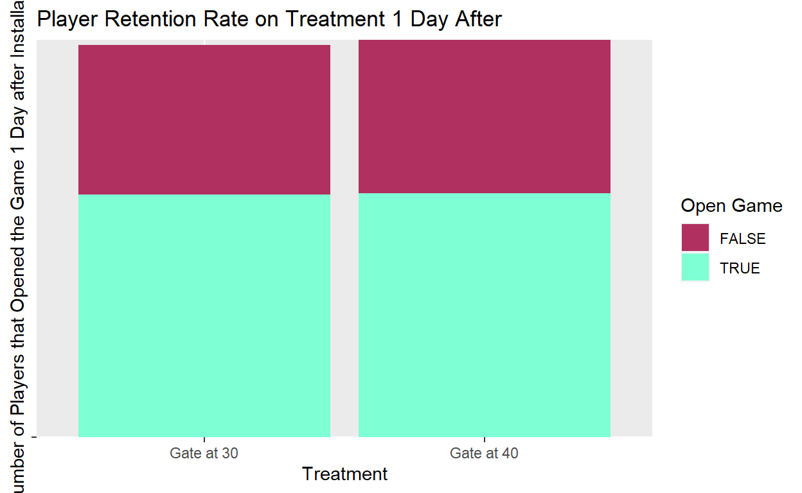
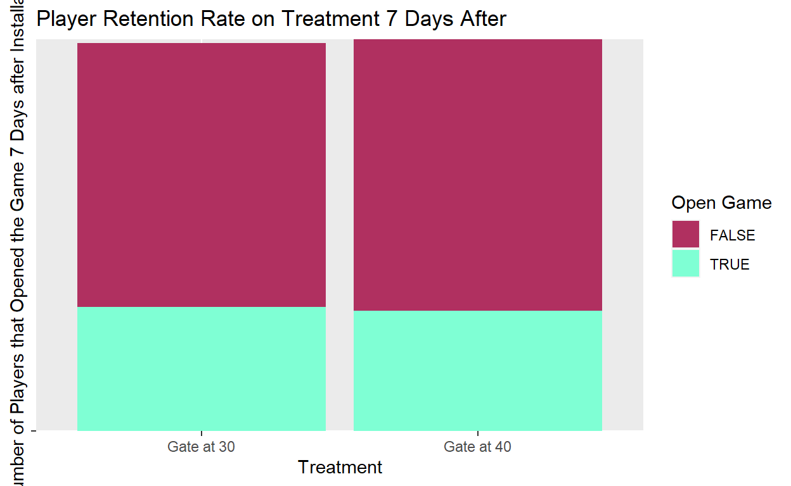

A brief look into A/B testing and implementation of some statistical tests in R
A/B testing is a randomized experiment in which two or more versions of the object of interest are assigned to randomized segments of the population of interest. of the object of interest in the experiment. The typical A/B testing experiment consists of a website in which there are different versions of a website layout and the experimenter notes which version leads to a higher percentage of the outcome of interest. In practice this could be seen by adding something like a cute cat picture to the button that asks for donations and randomly selecting who gets the cute cat and who gets the plain donate button and comparing the amount of donations earned in each case. If you would like to see all of the code used or download the data to test for yourself feel free to check out my Github.
The data used in this example is from a Datacamp example looking at A/B testing in python. Here I will be replicating some of the methods in R and hope to reach the same conclusion. The data is from a mobile game called Cookie Cats. The experiment that is put into place involves the placement of a gate in the game that makes a player wait some time before they continue to advance once reaching the gate. The initial placement of the gate was at level 30, and the A/B test involves moving the gate to level 40. The outcome of interest is player retention and there is data that shows if the player opened the app both one day and seven days after initially downloading the game. By randomly assigning who gets the gate at level 30 and who gets it at level 40, we can hopefully see if there is a statistical difference for one of the options that shows it is superior at player retention.
##Data Analysis and Visualization
Initially I will look at how the data is structured and then check to see if there are any na values that will need to be cleaned.
#glance at the first 5 observations
head(cat_data, 5)
userid version sum_gamerounds retention_1 retention_7
1 116 gate_30 3 FALSE FALSE
2 337 gate_30 38 TRUE FALSE
3 377 gate_40 165 TRUE FALSE
4 483 gate_40 1 FALSE FALSE
5 488 gate_40 179 TRUE TRUE#check for na values
anyNA(cat_data)
[1] FALSEThis shows that there are two values for the different retention rates and a variable that shows what version of the test the individual was assigned. There are no na values to take care of.
Next I will do some data visualization to get a feel for how the proportions of player retention varies for which level the gate was placed at.
#graph of version on day 1 retention rate
ggplot(cat_data, aes(x = version, y = retention_1, fill = retention_1)) +
geom_bar(stat = "identity") +
scale_fill_manual(values = c("maroon", "aquamarine"), name = "Open Game") +
ggtitle("Player Retention Rate on Treatment 1 Day After") +
xlab("Treatment") +
ylab("Number of Players that Opened the Game 1 Day after Installation") +
theme(axis.text.y = element_blank()) +
scale_x_discrete(breaks = c("gate_30", "gate_40"),
labels = c("Gate at 30", "Gate at 40"))

This graph shows us that over half of the people who installed the game played it a day after installation no matter which version, and there were slightly more people with the gate at level 40 who opened it. We can also see that the number of people with the gate at level 40 seems to be overall higher than the other version, so it is difficult to make comparisons based on visualization for data values this similar over versions. It is important to note that this graph does not show the number of levels played, so there is a chance many of these individuals did not actually reach level 40 to see the gate. Unfortunately the variable ‘sum_gamerounds’ shows how many rounds were played by each individual after 14 days so we cannot use it to see how hitting the cap on day one affects retention.
This next graph shows the same as the previous figure but with the variable of opening the game seven days after installation.

This graph shows us that the seven day player retention rate was slightly higher for those who had the default gate at level 30. Since the goal for this A/B test is long term player retention and this graph shows a slight increase in seven day retention for the level 30 gate, we might be inclined to believe that the level 30 gate is the best. However, in situations like this we need statistical significance to make any claims with causal evidence as to which version is better, or if there is even a statistically significant difference between them.
Since the visualization does not give any clear values, we can look at the relative and absolute values of the data to get an exact feel for how version changes retention.The initial table shows absolute proportions, but it is a bit confusing to look at and requires some simple math to really determine anything (though it will be useful later). The second table shows relative proportions which is much easier to digest, and shows that one day after installing the game, 45% of the players with a gate at level 30 opened the game and 44% pf those with the gate at level 40 did the same. This is a bit different from what the graph seemed to show, but that is due to the absolute number of those with the gate at 40 being higher and slightly altering the scale.
#absolute proportions of players coming back 1 day after installation
prop1 <- table(cat_data$version, cat_data$retention_1)
prop1_abs <- addmargins(prop1)
prop1_abs
FALSE TRUE Sum
gate_30 24666 20034 44700
gate_40 25370 20119 45489
Sum 50036 40153 90189#relative proportions of players coming back 1 day after installation
prop_rel1 <- prop.table(prop1, 1)
prop_rel1 <- round(addmargins(prop_rel1, 2), 2)
prop_rel1
FALSE TRUE Sum
gate_30 0.55 0.45 1.00
gate_40 0.56 0.44 1.00Next we will do the same with the retention rate seven days after installation. It shows a similar trend as we found in the previous tables, with 19% of those with the level 30 gate opening the game while 18% of those with the 40 gate do the same.
#absolute proportions of players coming back 1 day after installation
prop7 <- table(cat_data$version, cat_data$retention_7)
prop7_abs <- addmargins(prop7)
prop7_abs
FALSE TRUE Sum
gate_30 36198 8502 44700
gate_40 37210 8279 45489
Sum 73408 16781 90189#relative proportions of players coming back 1 day after installation
prop_rel7 <- prop.table(prop7, 1)
prop_rel7 <- round(addmargins(prop_rel7, 2), 2)
prop_rel7
FALSE TRUE Sum
gate_30 0.81 0.19 1.00
gate_40 0.82 0.18 1.00From the relative proportion table we can see that the level 30 gate has a 1% higher retention rate both one and seven days after installation. Next we need to determine if this difference is statistically significant. This is important because in every experimental sample there is potential error that could cause the base results found in the experiment to be incorrect or not correlate to the population as a whole. The first issue is sample size, since small samples could inherently be biased. Using the law of large numbers however, the results will eventually reach their expected value. The sample size of this experiment is very large as can be seen in the tables, so worries about sample size are not relevant. The main issue with statistical significance is with variation, an experiments results will be statistically significant when you can say the they are likely not caused by chance. Since the experiment was randomized and there is a large sample size, we do not have to worry about sampling bias. There is still a chance that the results we have found are due to random chance (especially because the 1% increase in retention is fairly small and you could potentially see them being swung the other way if chance was strongly on one side for the current sample). The number that is important in significance testing is the p-value. When the p-value is below a certain level of significance then the results that were found in the experiment are statistically significant. We typically use a 95% confidence level so a p-value of under 0.05 is significant.
##Statistical Tests
In R there are a few handy properties to determine the p-value of the results in the data. The function prop.test tests the null hypothesis that the proportions in several groups are the same, this correlates with the null hypothesis that the retention rate between the two gate locations is the same. So if the p-value is below the significance level of 0.05, the prop.test tells us that there is a there is a significant effect between the variables. There is another function we can use called the chisq.test which also finds us a p-value through the use of a chi square test which determines if two variables are significantly correlated. Using these function on the treatment and retention 1 day after below.
#different chi-squared test syntax
prop.test(prop1)
2-sample test for equality of proportions with continuity
correction
data: prop1
X-squared = 3.1591, df = 1, p-value = 0.0755
alternative hypothesis: two.sided
95 percent confidence interval:
-0.0124146168 0.0006042772
sample estimates:
prop 1 prop 2
0.5518121 0.5577173 chisq.test(cat_data$version, cat_data$retention_1, correct = FALSE)
Pearson's Chi-squared test
data: cat_data$version and cat_data$retention_1
X-squared = 3.183, df = 1, p-value = 0.07441Here we found a p-value of 0.07 which is above the significance level that we set. This means that there is not a significant relationship between the treatment variable and one day retention rate.
prop.test(prop7)
2-sample test for equality of proportions with continuity
correction
data: prop7
X-squared = 9.9591, df = 1, p-value = 0.001601
alternative hypothesis: two.sided
95 percent confidence interval:
-0.013303730 -0.003098867
sample estimates:
prop 1 prop 2
0.8097987 0.8180000 chisq.test(cat_data$version, cat_data$retention_7, correct = FALSE)
Pearson's Chi-squared test
data: cat_data$version and cat_data$retention_7
X-squared = 10.013, df = 1, p-value = 0.001554Using the same functions on seven day retention rate, we find a p-value of 0.0016 which is lower than the significant level. This shows that there is a significant relationship between the the treatment variable and seven day retention rate.
##Conclusions
We have found that using the relative proportions, it appears that the gate at level 30 increases retention rate both one and seven days after installation. Looking at the results of the statistical tests, these results are significant for the seven day retention rate but not for the one day retention rate. The final conclusion would be that since the treatment variable of what gate they get is statistically significant with seven day retention rate and the data shows that the gate at level 30 has a higher retention rate, they should keep the gate at level 30 for higher long term retention rate. It should be noted that since the data was similar across the treatment variable, that it may be worthwhile to test the data again with different levels of the treatment to see if other statistically significant results can be found at other levels. This was a brief look to the initial prep, logic and statistical tests that can be done to evaluate the results of an A/B testing experiment in R.